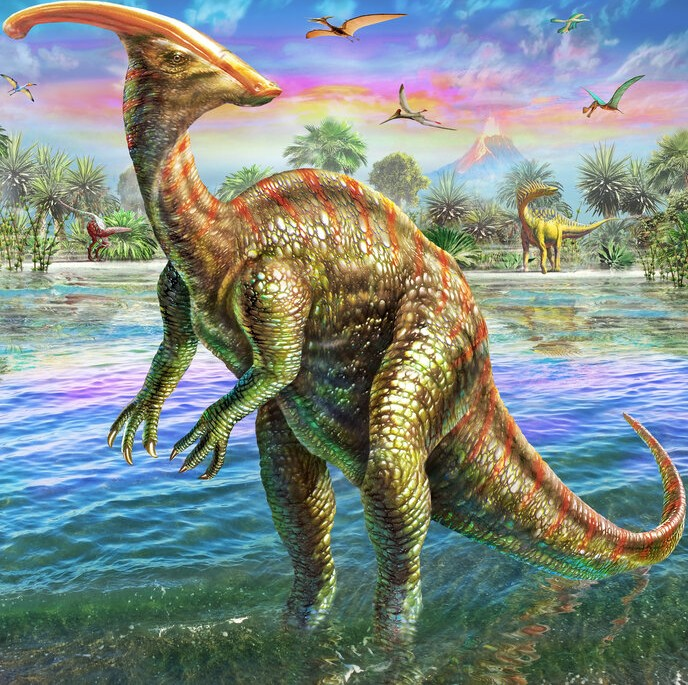

Cos'era il Parasaurolopo
Il Parasaurolophus era un dinosauro erbivoro appartenente agli adrosauri, detti anche “dinosauri a becco d’anatra”. È famoso per la sua lunga cresta sulla testa, che probabilmente serviva per comunicare e produrre suoni.

Il Parasaurolophus era un dinosauro erbivoro appartenente agli adrosauri, detti anche “dinosauri a becco d’anatra”. È famoso per la sua lunga cresta sulla testa, che probabilmente serviva per comunicare e produrre suoni.
Era lungo circa 10 metri, con:
Si nutriva di:
Viveva nei territori dell'attuale Canada e Stati Uniti.